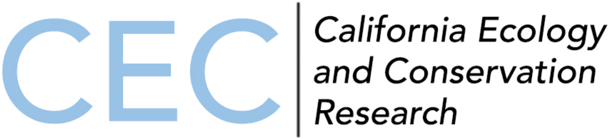

College is a wonderful experience. However, from meeting tons of new faces to making lifelong memories, the knowledge you gained and the ideas you learned in class can often be overlooked and forgotten. Especially since each day can be the same: from waking up for your morning lecture to having lunch on the same lawn to studying in the same spot in the library day after day. I didn’t want four years of learning like that, so I sought to expand my educational experience beyond the typical classroom. Here I outline not just my educational synopsis, but also how I elevated my undergraduate educational experience beyond just class inside a lecture hall.
University of California, Santa Barbara
Sep 2020 – Jun 2024
Bachelor of Science Environmental Studies
- Graduated: June 2024
- Cumulative GPA: 3.90 (High Honors/Magna Cum Laude)
- Relevant Coursework: Environmental Impact Analysis, Environmental Planning, Conservation Planning, Ecological Restoration, Green Building, Statistics for Environmental Science, Climate Change Mitigation Strategies, Water Supply & Demand
- Awards and Scholarships:
- 2024: College of Letters and Science Honors
- 2023: Starting Lines Award for Photography
- 2020-2024: Dean’s list (8 quarters)
- 2022: UCSB Griffiths Charitable EAP Scholarship ($2,350)
- 2021: Stapelmann Scholarship ($2,000)

California Ecology and Conservation
Jun 2023 – Aug 2023
Program Participant | University of California Nature Reserve System
In the summer of 2023, I participated in California Ecology and Conservation, a field study program hosted by the UC Nature Reserve System (NRS). Over the course of 7 weeks, a cohort of undergraduate students from various UC campuses and I traveled to 5 different NRS nature reserves to learn about various topics in ecology, biology, field research, experimental design, statistical analysis, and scientific writing and presenting. Field research methods I conducted included sub-sampling techniques, water sampling, physical tree measurements, phenological data collection, and aquatic macroinvertebrate identification. I analyzed field data with JMP Statistical Software and Microsoft Excel and gained familiarity of a variety of flora and fauna across California. The progression of my work culminated several research projects that included a paper and a presentation. I played a large role in three research projects investigating:
the correlation between dead biomass and the presence pitch canker disease in Monterey Pines (Pinus radiata)
National University of Singapore
Jul 2022 – Dec 2022
Exchange Program | University of California Education Abroad Program
My desire to travel the world and learn from a new physical and mental perspective led me to a semester abroad on an exchange program at the National University of Singapore in Singapore. Located over 8,000 miles away from home, I had no trouble getting accustomed to the physical and cultural environment. I fell in love with the nation through its amazing food, people, natural (and unnatural) landscapes, built infrastructure, public transportation system, and the nation’s drive to be a global leader in business and sustainability despite its small size. I took classes on the social perspectives of public infrastructure, weather and climate, energy systems, and the influence of Western classical music on Singapore’s history and present state. But above that, I learned what it was like to live in a different country, surrounded by people with perspectives drastically different than my own. It was an enriching experience that I hope to continue someday in the future.1
Footnotes
I made a (very rough) guide to Singapore tourism and food. If you are interested in it, feel free to send me an email at owenchoy02@gmail.com!↩︎